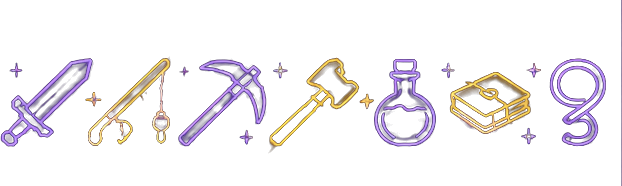
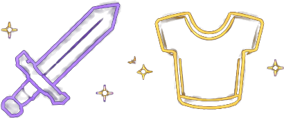
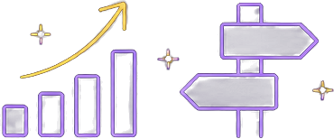

SKYBLOCK PROGRESSION TRACKER
Track Your SkyBlock Journey
Explore progression examples, compare your profile, and discover what you could work on next.
Explore ProgressionSKYBLOCK PROGRESSION
Skills • Dungeons • Slayers • Gear
How SkyTrack Works
Use the guides and examples to plan your progression.
Review Your Stats
Look at your SkyBlock level, skills, Slayers, Catacombs level, and equipment.
Compare Your Progress
Compare your current profile with examples and goals for different stages of the game.
Choose Your Next Goal
Use the Skills, Gear, and Advisor guides to decide what you want to improve.
What We Look At
Important areas to consider when planning progression.
SkyBlock Level
Level
Skill Average
Skills
Catacombs Level
Dungeons
Slayer Levels
Slayers
Equipment
Gear
Overall Progress
Game Stage
Progression Example
See how a player's weaker areas can help determine what to focus on next.
EXAMPLE PLAYER
Example Profile
RECOMMENDED FOCUS
Catacombs Progression
This player's Catacombs progression is behind several other areas of their profile. Focusing on Dungeons would help them unlock more equipment and progression opportunities.
View Dungeon Recommendations →Progression Examples
Explore how progression changes as players reach different stages of SkyBlock.
Early Game
Start building your profile with affordable equipment and basic skill progression.
Mid Game
Improve your skills, unlock more content, and begin investing in stronger equipment.
Late Game
Progress through higher Dungeon floors and work toward powerful combat setups.
End Game
Work toward optimized equipment and advanced progression goals.
Progression Is Different for Everyone
These are examples rather than strict requirements. Different players may prioritize different activities.
Explore Your Progression
Choose an area of SkyBlock to learn more about.

Skills
Learn how to improve Combat, Mining, Fishing, Foraging, Farming, and more.
Explore Skills →
Gear
Explore weapon, armor, and pet recommendations for different stages.
Explore Gear →
Progression Advisor
Compare example profiles and decide which areas you should focus on next.
Explore Advisor →